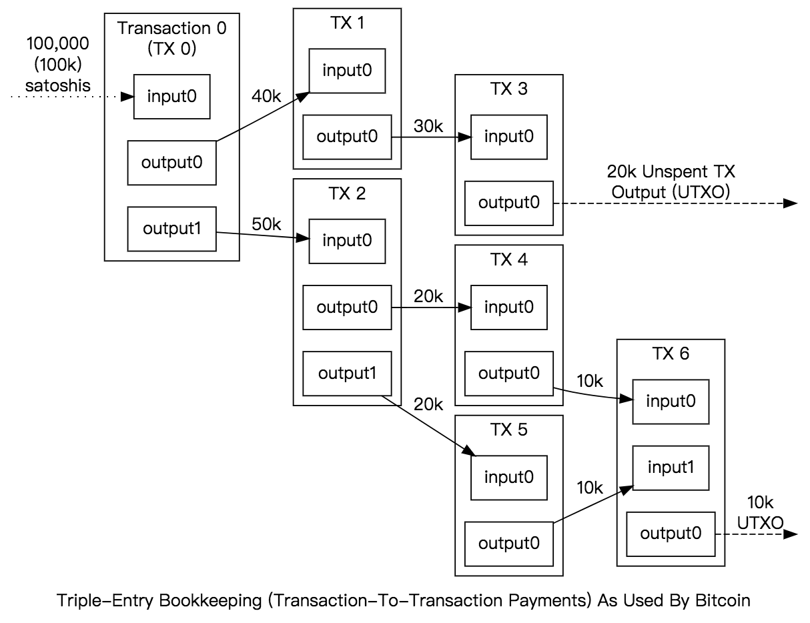
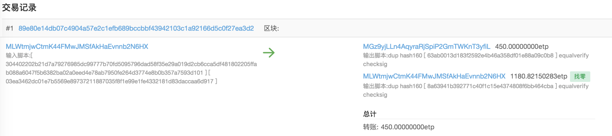
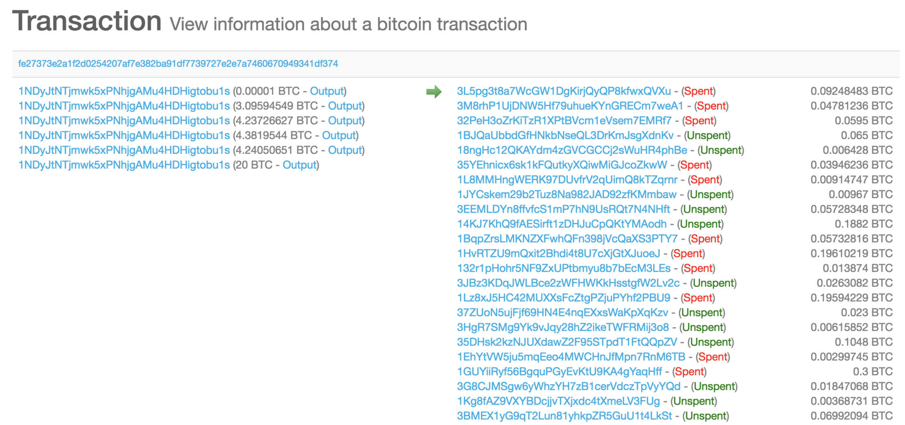

- 00 开篇词 帮你从0到1深入学习区块链技术.md.html
- 尾声篇 授人以鱼，不如授人以渔.md.html
- 新书首发《区块链第一课：深入浅出技术与应用》.md.html
- 第01讲 到底什么才是区块链？.md.html
- 第02讲 区块链到底是怎么运行的？.md.html
- 第03讲 浅说区块链共识机制.md.html
- 第04讲 区块链的应用类型.md.html
- 第05讲 如何理解数字货币？它与区块链又是什么样的关系？.md.html
- 第06讲 理解区块链之前，先上手体验一把数字货币.md.html
- 第07讲 区块链的常见误区.md.html
- 第08讲 最主流区块链项目有哪些？.md.html
- 第09讲 深入区块链技术（一）：技术基础.md.html
- 第10讲 深入区块链技术（二）：P2P网络.md.html
- 第11讲 深入区块链技术（三）：共识算法与分布式一致性算法.md.html
- 第12讲 深入区块链技术（四）：PoW共识.md.html
- 第13讲 深入区块链技术（五）：PoS共识机制.md.html
- 第14讲 深入区块链技术（六）：DPoS共识机制.md.html
- 第15讲 深入区块链技术（七）：哈希与加密算法.md.html
- 第16讲 深入区块链技术（八）： UTXO与普通账户模型.md.html
- 第17讲 去中心化与区块链交易性能.md.html
- 第18讲 智能合约与以太坊.md.html
- 第19讲 上手搭建一条自己的智能合约.md.html
- 第20讲 区块链项目详解：比特股BTS.md.html
- 第21讲 引人瞩目的区块链项目：EOS、IOTA、Cardano.md.html
- 第22讲 国内区块链项目技术一览.md.html
- 第23讲 联盟链和它的困境.md.html
- 第24讲 比特币专题（一）历史与货币.md.html
- 第25讲 比特币专题（二）：扩容之争、IFO与链上治理.md.html
- 第26讲 数字货币和数字资产.md.html
- 第27讲 弄懂数字货币交易平台（一）.md.html
- 第28讲 弄懂数字货币交易平台（二）.md.html
- 第29讲 互联网身份与区块链数字身份.md.html
- 第30讲 区块链即服务BaaS.md.html
- 第31讲 数字货币钱包服务.md.html
- 第32讲 区块链与供应链（一）.md.html
- 第33讲 区块链与供应链（二）.md.html
- 第34讲 从业区块链需要了解什么？.md.html
- 第35讲 搭建你的迷你区块链（设计篇 ）.md.html
- 第36讲 搭建你的迷你区块链（实践篇）.md.html
- 捐赠
第16讲 深入区块链技术（八）： UTXO与普通账户模型
我们在第2讲“区块链到底是怎么运行”一文中，提到了村长给张三转账的例子，那里村长的例子就是UTXO模型的一个简化版本。
评论区里有不少留言在问：“为什么不直接记余额呢？”看来很多人都对这个问题很感兴趣，今天我们就来聊一聊这个话题。
区块链网络中有两种记账模式，除了UTXO模型还有 Account Based 结构，也就是普通账户模型，也叫账户余额模型，前者在比特币系的数字货币中被广泛使用，后者更多是用在智能合约型的区块链上。
普通账户模型
我们先从传统的账户模型出发来聊聊是如何记账的，假设我们现在有一个支付系统，在这个支付系统中有村长和张三两个账户，村长账户里有100万，现在要转账给张三10万，这其中涉及的操作是这样的：
- 检查村长的账户余额是否大于10万；
- 把村长的账户扣除10万变成90万，然后发送一笔转账消息给张三的账户；
- 张三的账户接受到转账消息，将张三的账户余额加10万。
我们可以发现，无论是村长还是张三，都具有一个余额作为状态，即当前余额是记录在某个地方的，只需要读出来即可，这种设计我们叫做账户余额模型。
如果以上三个步骤是在一个中心化系统中，甚至在同一个数据库中，那将非常简单，会直接退化成一个事务，我们见到的银行账户、信用卡系统、证券交易系统、各种电商类应用，理财类应用基本都是一个中心化系统中的，最多也就是跨表跨数据库。
想必这类场景下的设计，各位工程师对此应该是了如指掌的。
如果以上的步骤中，村长和张三的账户分属两个不同的系统，例如从A银行到B银行，就需要经过人民银行支付系统，即可信任的中心化第三方来做中介。
你可能发现了，在跨行转账的这种情况下，是没有办法做事务的，所以1和3是不同步的，如果3操作失败，还需要从2倒退到1的状态，这个情况叫做冲正交易。
普通账户模型具有自定义数据类型的优点，但是却需要自己设计事务机制，就是上述所说的冲正交易。而接下来所讲的UTXO模型则恰恰相反。
UTXO模型
UTXO全称是：“Unspent Transaction Output”，这指的是：未花费的交易输出。这里面三个单词分别表示 “未花费的”“交易”“输出”，接下来我来详细讲解一下UTXO的含义。
UTXO的核心设计思路是无状态，它记录的是交易事件，而不记录最终状态，也就是说只记录变更事件，用户需要根据历史记录自行计算余额。
有点像MySQL中的Binlog，主从模式的情况下，按照Binlog来更新数据，Redis的AOF模式备份模式也是如此，UTXO也是类似的思路。
下面我们按照按照普通账户中的例子来重新讲解一遍。
如果要记录交易本身，那么我们可以构造一笔交易，这笔交易中村长转账10万给张三的同时，90万转给自己。
如下所示：
村长 100万 –> 张三 10万- - –> 村长 90万
这里其实有三条子记录，左边一条，右边两条，左边叫做输入，右边叫做输出。
输入和输出组成了交易，输入和输入需要满足一些约束条件：
- 任意一个交易必须至少一个输入、一个输出；
- 输入必须全部移动，不能只使用部分，所以才产生了第二个输出指向村长自己；
- 输入金额 = 输出金额之和 + 交易手续费，这里必须是等式。
对于村长来说，首先构造交易的输入输出，满足上述条件，然后广播到全网，接收方自行判断交易是否属于自己。这里满足约束条件构成的交易模型，也就是村长记录的三条转账事件就是UTXO模型。
账户余额模型与UTXO的比较
我们可以归纳出UTXO与普通账户模型的一些区别。
存储空间，UTXO占用空间比账户模型高，因为账户模型只记录最终状态。
易用性，UTXO比较难处理，账户模型简单容易理解。例如UTXO在使用上，还需要配合高效的UTXO组装算法，这个算法要求尽可能降低输入输出的个数，还要让“零钱“归整，算法的复杂度相比账户余额无疑要高。
安全性，UTXO比账户模型要高，UTXO本身具备ACID的记账机制，而账户模型需要自行处理，例如重放攻击。
普通账户模型具有较高的自由度，可以让智能合约有更好的发挥空间，并且它避免了UTXO的复杂组装逻辑，精度控制上也更为得心应手。
UTXO似乎天然是为数字货币设计的，具有较高频次跨账户转移场景都使用UTXO会比较好，考虑到智能合约的普适性，UTXO与智能合约并不能很好地兼容，但是这也对开发者的自身水平提出了更高的要求。
区块链中的UTXO模型
我们借用比特币开发者文档中UTXO模型的图示，来看看UTXO实际的构造形式。

上图中，所有的交易都可以找到前向交易，例如TX5的前向交易是TX2，TX2中的Output1作为TX5中的Input0。
意思就是TX2中的付款人使用了Output1中指向的比特币转移给 TX5 中的收款人，接着TX5中的人又把收到的比特币转移给了TX6中的收款人，成为了TX6中 Output0。
我们也可以发现，TX6中的收款人还没有产生TX7交易，也就是说Output0还没有被花费，这时候我们终于得到了UTXO的真正语义：Unspent Transaction Output，未花费的交易输出。
我们这时候可以发现UTXO也同样能表示余额，不过是重演计算的方式，它用不同的方式表达了余额，我们把一个地址上所有的UTXO全部找出来，就是这个地址总的余额了。
我们还可以发现，无论是TX5还是TX2，都已经成为历史交易，它们都忠实客观地记录了两笔交易，这两笔交易代表的是事件，而不是余额状态转移，这是我们看到的最直观的区别。
我们再来看看一个真实的交易例子。

这是区块链上一笔真实交易的例子，它记录了一笔450ETP的转账记录。
左边是输入，右边是两笔输出，其中第二个输出是给自己的账户，这和我们村长转账给张三的例子是一样的。
下图是交易解码为JSON格式的样子，可以看到Previous_output是放到Inputs数组里的，意思就是前向输出作为本次的输入。
{
"hash" : "89e80e14db07c4904a57e2c1efb689bccbbf43942103c1a92166d5c0f27ea3d2",
"height" : 1093399,
"inputs" :
[
{
"address" : "MLWtmjwCtmK44FMwJMSfAkHaEvnnb2N6HX",
"previous_output" :
{
"hash" : "770a72f35d3e3a78bd468949bad649f03b241cf7e2a84cc2d6fdabacdcc47f06",
"index" : 0
},
"script" : "[ 304402202b21d7a79276985dc99777b70fd5095796dad58f35e29a019d2cb6cca5df481802205ffab088a6047f5b6382ba02a0eed4e78ab7950fe264d3774e8b0b357a7593d101 ] [ 03ea3462dc01e7b5569e89737211887035f8f1e99e1fe4332181d83daccaa6d917 ]",
"sequence" : 4294967295
}
],
"lock_time" : "0",
"outputs" :
[
{
"address" : "MGz9yjLLn4AqyraRjSpiP2GmTWKnT3yfiL",
"attachment" :
{
"type" : "etp"
},
"index" : 0,
"locked_height_range" : 0,
"script" : "dup hash160 [ 63ab0013d183f2592e4b46a358df01e88a09c0b8 ] equalverify checksig",
"value" : 45000000000
},
{
"address" : "MLWtmjwCtmK44FMwJMSfAkHaEvnnb2N6HX",
"attachment" :
{
"type" : "etp"
},
"index" : 1,
"locked_height_range" : 0,
"script" : "dup hash160 [ 8a63941b392771c40f1c15e4374808f6bb464cba ] equalverify checksig",
"value" : 118082150283
}
],
"version" : "2"
}
我们再看看比特币上的例子：

这一笔比特币交易包含6个输入，几十个输出，交易一共3.5kb，交易的输入输出会影响交易大小，比特币的交易费是根据字节收费的，交易尺寸越大越贵，而交易尺寸主要和输入输出的个数有关，也就是说，算法上并不规定输入输出的个数，而只有区块尺寸限制。
在比特币中将小于100kb的交易称为标准交易，超过100kb的称为非标准交易。它的前向input以及生成一个out约占用161~250 bytes 。所以在比特币中，大约的inputs/ouputs的最大数目限制为 100KB/161B ~= 600个。
UTXO的特性及缺点
从计算的角度来说，UTXO具有非常好的并行支付能力，也就是我们上文中所说的如果没有尺寸限制，一笔交易可以包含任意笔输入输出，同时也没有次序要求，在一笔交易中哪一个UTXO在前，哪个在后面不影响最终结果。
从存储的角度来说，UTXO具有较好的可裁剪特性，可裁剪性指的是UTXO类型的交易，如果从最老的那一笔UTXO开始截断数据库，那么之前的数据可以删除掉了。
如果想进一步压缩数据尺寸，可以在任意位置截断，记录UTXO对应的交易哈希即可，然后从其他节点获取并校验UTXO，这也是SPV轻钱包工作的基础之一。
以太坊中并没有使用比特币的这种UTXO设计，这与以太坊的宗旨有关，以太坊的目标是构建通用计算，而比特币是数字货币，需求不同导致设计的不同。
V神指出了UTXO的缺陷，一共有三类。
1.可表达的状态少 。
UTXO只能是已花费或者未花费状态，这就没有给需要任何其它内部状态的多阶段合约或者脚本留出生存空间，这也意味着UTXO只能用于建立简单的、一次性的合约，UTXO更像是一种二进制控制位。
2.区块链盲点（Blockchain-blindness）。
UTXO的脚本只能看到自己这条历史轨迹，无法看到区块链的数据的全貌，这导致了功能性扩展受到了限制，我们在花费比特币的过程中需要小心翼翼的组合UTXO，这也导致了系统状态逻辑复杂，不适合设计成智能合约的基础结构。
3.价值盲点（Value-blindness）。
UTXO脚本不能提供非常精细的金额控制，基于账户模型的余额在花费过程中，可以任意的按值存取，它仅取决于程序能表示的最小精度。
而UTXO要求必须全部移动，如果要满足一个目标值金额，对组合UTXO算法的要求会比较高，采用许多有不同面值的UTXO，一方面要求尽可能地精确，另一方面又要求输入输出的数量尽可能的小。
UTXO是比特币上的原生设计，在区块链以前是没有这种逻辑数据结构，UTXO的出现给了人们看待数据转移的不同视角，但UTXO不是所有区块链所必需的，公链开发过程中的是否选用UTXO模型可以根据业务场景进行判断。
总结
好了，今天我们分别介绍了普通账户模型和UTXO模型，并从不同角度比较了二者的优劣。
从技术选择上来看，比特币选择UTXO是为了满足支付的安全性，以太坊选择普通账户模型是为了智能合约的自由度。
最后留给你一个问题，历史上UTXO或账户模型是否引发过比较严重的使用缺陷呢？你可以给我留言，我们一起讨论，感谢你的收听，我们下期再见。
© 2019 - 2023 Liangliang Lee. Powered by gin and hexo-theme-book.